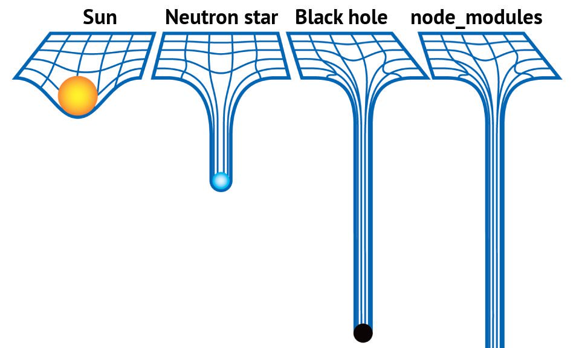
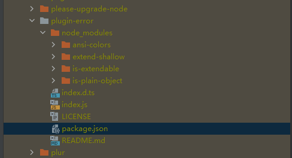

背景
前端使用npm来作为包管理工具，它的使用门槛/发包门槛低到惊人，好处是培养了非常丰富的社区和庞大的第三方包，包的数量远超第二名maven。
但所有东西都会有代价，坏处是npm的包质量方面良莠不齐，依赖链非常深，很简单的小工具方法都可能去使用包。
因此所有的现代化前端项目，都会有一个非常庞大的依赖，就有了下面这个笑话：

事实上，在日常的开发工作中，很少有开发者会去关注自己的项目使用了哪些依赖。
依赖与信任
前端项目往往会通过npm包管理器去安装丰富的社区贡献的功能模块包，这些模块包对于自己的项目就叫依赖。使用依赖会带来极大的便利性，大量的功能不需要自己去亲自实现，但是也会有安全性问题，我们如何信任一个依赖包？
一个依赖包，是有它的版本的，版本号都是 X.Y.Z 的形式。X是Major位，或者叫主版本，Y是Minor位，中文次要版本，Z是Patch位，中文修订版本。为什么要这样设计呢。
简单讲，一个包发布以后，还会有持续的维护，会不停的修改迭代。修改又可以分为这几种：修复包里的bug；新增功能；大的架构升级优化。
可以看出来，修bug的升级，最好每个用户都升级。新增功能，一般也不会导致之前的功能出问题，大部分用户也都可以升级。而一旦到了架构升级优化，一般就会伴随着breaking change，就是存在不能向前兼容的变化，这种升级就需要用户明确感知，谨慎操作了。
因此我们在前端项目中，package.json文件里记录依赖版本的时候，一般会用 ^ 开头，这个意思就是指安装的时候会尝试安装这个主版本下的最新次要版本和修订版本。比如声明了 "mpxjs": "^2.0.0" ，实际执行npm安装的时候，就会去看2这个主版本下最新的次版本和修订版，假设最新的是2.3.3，就会安装2.3.3。
关于版本号语义化，详情见 此链接 。
OK那么到这里，能看到一些问题吗？
版本号的语义化规定是这样的，但是包的开发者一定就会遵守吗？君子协定，大部分时候都是没问题的，但是面对这么大规模的生态系统，难免部分包的维护者因为失误、因为能力有限、甚至故意的情况下，往依赖包里投毒，就会导致悲剧的结果。
这种case并不少见，比如最近有知名开源库 colorjs ，就是作者自己突然 加入破坏性代码 然后发布一个小的修订版本，所有依赖这个包的项目都遇到了问题。
怎么避免这个问题呢？一般来说，商业项目的正常需求迭代，都会有测试同学测试后才会进行发布上线，测试同学的存在能很大程度避免依赖包造成的bug带来项目的bug。
但是当我们只是改一个局部的小需求的时候，测试同学也只会关注局部的变化，这时如果有依赖发生变化导致其他地方产生非预期的变化，就非常容易造成故障。所以纯靠测试同学基本是无法面对依赖变化带来的故障的。
锁定依赖
那我们可以锁住依赖吗？毕竟外部的依赖太未知了，没有人可以保证依赖不会出问题。那么如果我们无视前面说的语义化版本，哪怕patch位一般是用来修bug，我们也统统无视，直接在我们的项目描述文件 package.json 中声明一个固定的版本号，是否就可以规避外部依赖的变化所带来的问题了呢？
很遗憾也不行。目前的前端包，有非常深层次的各种依赖。比如随便打开一个项目的依赖文件夹，里面真的像是一个迷宫，充斥着各种你听说过没听说过的包，一个包里又镶嵌着几个属于它的依赖，如图：

即使你声明了你的项目的依赖都是固定版本号，不带^也不带~，你控制不了你依赖的依赖，控制不了依赖的依赖的依赖……
可靠构建
这个问题如此明显，因此很快就有 yarn 提出了 lock 方案， npm 也很快做了跟随，两者实现可能有所区别，但是原理基本是一样的，记录下安装那一次的整颗依赖树，在 lock 文件里。
因此我们只要能按照 lock 文件里记录的完整依赖树去原封不动的安装依赖，问题就解决了。
这个命令在 npm 这个工具下叫 npm ci。它不会去按版本语义化的规定去看符合规则的最新版本是多少，而是只关注lock文件里记录的，上次安装的版本是什么，这次就安装什么。
这个行为太符合持续集成场景下的需要了，本地开发完成提交代码后，云端去构建，使用lock文件来安装依赖，保证和你本地的依赖完全一致。反复执行构建部署，出来的产物完全一致。
因此给使用 lock 文件来进行构建的这个过程叫可靠构建。
OK那么问题就完美解决了吗？并没有。再考虑下这个问题，你本地开发时应该执行 npm i 还是 npm ci 来安装依赖呢？
如果执行 npm ci ，依赖始终不变，所有包都停止升级，那么包自生的一些后发现的缺陷就得不到修复，一些新能力也无法使用。
如果执行 npm i ，依赖一变化，lock文件会发生大变的，这时候也很难去仔细review每一个依赖包的变化，就和没有lock时候没什么区别了？
好的不卖关子了，世界不是非黑即白的，如果我们结合这两者来用，就可以取得很好的效果。
具体实践
简单点说就是开发时候尽量用 npm ci 来安装依赖。只有负责同学或者明确知道自己要升级某个依赖才执行 npm i ，因为之前都尽量用 ci 来安装了，这时的 npm i 所产生的 package-lock.json 的 diff 是非常可阅读的，代码CR时就可以关注 lock 文件的变化。
对于一个前端项目，使用足够新的npm，如果是使用某些脚手架工具生成的项目，第一次可以直接执行 npm i ，安装依赖的同时会生成一个 package-lock.json 的文件（后简称lock文件）。在 git-ignore 文件里忽略 node_modules 目录，但不要忽略lock文件，即我们需要把lock文件提交到 git 里（这个在npm的文档里也可以看到是推荐的行为）。
接下来可以正常的开发提交代码。在这一次迭代中，当还有其他的合作同学跟你共同开发，或是你换了一台电脑或者你因为某些原因需要重新安装依赖时，使用 npm ci 而不是 npm i 来安装依赖。
这样就可以使前后都是完全相同的依赖。（如果使用 npm i 会因为新电脑的 node 环境、网络环境、npm registry 配置等等因素，导致装出一份符合 package.json 但 lock 差异巨大的依赖库）
OK初次开发完成后，质量保障同学会进行全面的测试回归，没有问题后完成了第一次发布。接下来来到第二次需求迭代。
// 未完待续
扩展阅读
分享起源
我想分享这个内容，是因为看到了这篇文章：为什么我推荐你提交node_modules
乍一看有点想笑，居然推荐大家把 node_modules 提交到 Git 里，结果一看作者是 Chrome 开发团队的，再仔细读下内容，也挺有道理的，真是看不同的开发场景，不同的团队和基础设施吧。
为什么他要推荐大家把 node_modules 提交到 Git 呢？我简单总结下他的观点：
- 你就不需要安装依赖了（哈哈😀）
- 反复构建就不会不一致了
- 更好了解你要交付的代码（应该是指你能更好感知你的依赖库的规模）
- 会更谨慎地添加依赖（属于3的增强，以前可能觉得依赖是透明的缺乏关注）
- 便于管理大的差异diff（说实话我不理解这是什么意思）
- 避免依赖攻击
其实可以看到，他担心的问题也是我所担心的，大家考虑的地方挺大同小异的，我上面提出的方案也可以很好解决这些问题。
其他思路
除了本文上述方式来解决项目中的依赖管理问题，还有不少前辈走出了不一样的路。比如vite/umi等框架提出的依赖预打包方案。